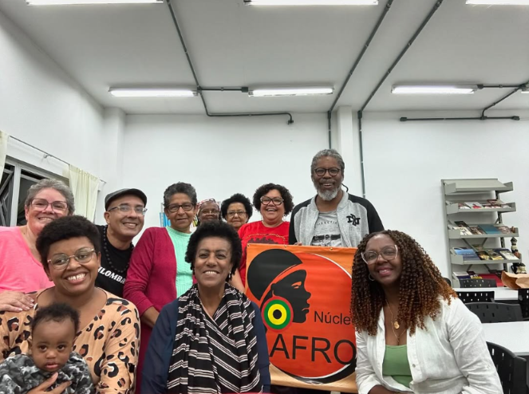

Memória e organização comunitária
Núcleo Afrodescendente Manoel Martins dos Passos da Foz do Itajaí
AtuaçãoItajaí e região da Foz do Rio Itajaí-Açu.
Parte da história negra de Itajaí que hoje chega às escolas, aos museus e às exposições existe porque um grupo de pessoas decidiu preservá-la. Uma das entidades que mais trabalham nisso é o Núcleo Afrodescendente Manoel Martins dos Passos da Foz do Rio Itajaí-Açu, que atua em defesa da memória afro-itajaiense.
De onde vem o Núcleo
O movimento negro organizado em Itajaí tem uma trajetória de décadas. Em 1979, Adilson Pacheco tentou, pela segunda vez, organizar um movimento negro na cidade, inspirado no Movimento Negro Unificado, criado em São Paulo em 1978. Em 1984, professores do Colégio Salesiano, influenciados pela Teologia da Libertação, publicaram uma edição do periódico Idéia Força, discutindo a realidade dos afrodescendentes no Brasil.
Em 1988, a Campanha da Fraternidade, liderada pelo Padre Sérgio Jacomelli, da Paróquia do Bairro Fazenda, levou à criação da Pastoral do Negro. Em 1992, o Movimento Negro Tio Marco reinventou a Festa de Nossa Senhora do Rosário. Esse grupo é hoje conhecido como Núcleo Afro-descendente Manoel Martins dos Passos.
Fontes municipais e jornalísticas registram a fundação do Núcleo em 1998. Entre seus fundadores está o historiador José Bento Rosa da Silva, professor da Universidade Federal de Pernambuco e pesquisador da presença africana na foz do Itajaí. A historiadora e professora da rede municipal Salete Aparecida dos Santos atua no Núcleo desde a fundação e foi uma das homenageadas do Prêmio Simeão 2023.
O que o Núcleo faz
Preservação e defesa do patrimônio. Em 2006, o Núcleo apresentou a petição para que a Sociedade Sebastião Lucas fosse reconhecida como Lugar de Memória, destacando sua importância para a população negra de Itajaí. O clube foi tombado como patrimônio cultural da cidade em 2007.
Memória viva. O Núcleo promove encontros como o "Café com História" ou "Café com Memórias", rodas de conversa que reúnem pessoas que viveram a história dos clubes negros. Em uma das edições, realizada no Museu Histórico de Itajaí durante o mês da Consciência Negra, a roda reuniu as mulheres fundadoras do Clube Sebastião Lucas, com mediação de Fátima Regina Silva. Relatos desses encontros foram usados em pesquisas acadêmicas sobre a cidade.
Festa de Nossa Senhora do Rosário. Integrantes do Núcleo participam da organização da festa, desde a arrecadação de alimentos até as atividades do dia, mantendo viva uma tradição ligada à religiosidade negra.
Presença nas políticas públicas. Representantes do Núcleo participam do Conselho do Desenvolvimento da Comunidade Negra de Itajaí. Nas atas das reuniões, aparecem cobrando ações como a formação de professores em questões étnico-raciais e o funcionamento do grupo de trabalho sobre diversidade étnico-racial na Secretaria Municipal de Educação.
Por que isso importa
Muita coisa que aparece neste material, como a presença de africanos desde a fundação da cidade, os clubes negros e a história do Sebastião Lucas, só chegou a ser conhecida porque pesquisadores e militantes foram atrás de documentos e de memórias. O Núcleo faz a ponte entre a pesquisa acadêmica e a comunidade, mostrando que a história negra de Itajaí não está só nos livros, mas também nas pessoas que a viveram.
Fontes
- Fundação Genésio Miranda Lins / Geledés, "A outra história de Itajaí".
- Prefeitura de Itajaí, "Prêmio Simeão 2023 vai homenagear cinco personalidades negras de Itajaí" e programação da campanha Itajaí Sem Racismo.
- Diarinho, "Cinco personalidades negras são homenageadas em Itajaí" e "Encontro cultural celebrará comunidade haitiana de Itajaí".
- Atas do Conselho do Desenvolvimento da Comunidade Negra de Itajaí (SEDAC/Prefeitura).
- CARDOZO, H. S. Segregação racial e resistência negra em Itajaí no século XX. UFSC, 2025.
Acompanhe o Núcleo pelo Instagram @nucleoafromanoelm.dos.